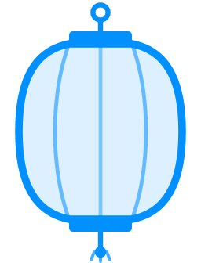

Lantern is a small Filecoin node running on your computer. It verifies the network's state cryptographically without trusting any single provider, and lets your wallet send and receive FIL directly. No data center, no big disk, no waiting hours to sync.
Lantern bootstraps trust by checking 5 independent sources agree on the same Filecoin finality. From there, every byte of state is verified by cryptographic hash.
Distribution of IPLD blocks served by each tier. Cache hits don't need network round-trips; gateway and Bitswap race in parallel for cold blocks.
| Peer ID | Addresses |
|---|---|
| loading… | |
| Source | Hits |
|---|---|
| loading… | |